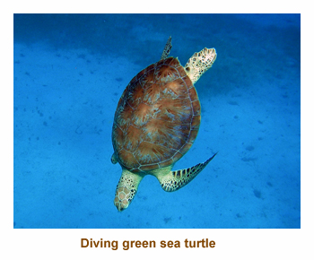
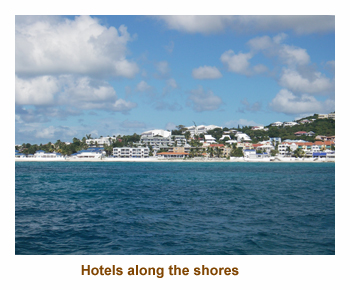

[ Home ] [ Travel ] [ Photography ] [ Pets ] [ Games] [ Rowing] [ Physics ]


Cruising on the Allure of the Seas
Travel
Cruises
Past Cruises (Diaries)
Future Cruises
Rogues Galleries
Land Trips
Diaries (Land Trips)
Hawai'i - Big Island - 04'01
Hawai'i - Maui - 05'02
Hawai'i - Big Island - 04'03
Hawai'i - Kaua'i - 09'04
Hawai'i - Big Island - 04'06
Hawai'i - Maui - 04'06
Mainland China - 05'07
Phoenix, Arizona - 12'07
Greek Isles - 05'08
Hawai'i - Kaua'i - 09'08
Hawai'i - Big Island - 09'09
Hawai'i - Maui - 05'12
Hawai'i - Big Island - 04'13
Ireland - 08'13
Mexico - Cancun 11'13
France/Belgium/Lux 07'15
Hawai'i - Big Island - 05'17
England / Wales - 06'17
Hawai'i - Big Island - 09'19
Photography
Cameras
Underwater
Pets
Tara
Blackie
Whitey
Muffy
Ollie
Rusty
Fluffy
Rufus&Dufus
Games
Rowing
Physics
Rating (out of 5): Ship  Food
Service
Itinerary
Food
Service
Itinerary
Marjorie booked this cruise as an extension of our Liberty of the Seas transatlantic cruise. This was the first case where we chose a cruise based on the ship rather than the itinerary. We had done the Caribbean islands several times, but we had never done such a large ship. We were excited to see what amazing innovations would be aboard. We definitely weren't disappointed as this ship is certainly is the most interesting ship at sea!
The double occupancy capacity of the Allure is 5,400, while the "all berths full" capacity is about
6,300. We were somewhere in between with 5,600, so most or all of the cabins were occupied.
We had 400 kids (under 18) aboard which was less than normal. However, the next sailing (over
the US Thankgsgiving holiday) was expecting 2,600 kids! I'm glad we were on the earlier sailing!!
However, going against the numbers, the Meet & Mingle on the Allure was a fraction of the size
of the Liberty, and the Diamond members happy hour group was much smaller as well. I guess
the younger demographic of the Allure means not so many Diamond members or Cruise Critic
fans.
Day 1 (Nov 13) - Boarding in Fort Lauderdale
Continuing on from the previous cruise, we had just overnighted in Fort Lauderdale at the Hilton Marina, courtesy of Royal Caribbean. We woke up at 6:30 AM. We had bought some muffins and Choco from the grocery store yesterday so had a quick and easy breakfast.. We repacked our suitcases ready for the ship. We had some spare time so joined D&J for a drive around the city. Then we came back to checkout and get our bags to the lobby by 10:30. We picked up a number for our transfer and deposited our bags in a transport truck. We were on to the bus at 11:30. It was a short drive to the docks. We had a very quick checkin and were onto the ship by noon. The ship was HUGE!!
We met D&J in the Royal Promenade in front of the pizza place. So, that's what we had for lunch.
As we sat there we met Marjorie's friends from the Travel Agency. We went to our cabin at 1:00.
Our bags were there soon after. We unpacked and then explored ship.
We ran into Lynn and John, so toured with them. Dinner was at 5:45. I had the prime rib. It was very good.
The entertainment was the musical Chicago at 9:00. It didn't appeal to me so I wandered the ship and
then read instead.
Day 2 (Nov 14) - A Day in Nassau, Bahamas
We were up at 6:00 AM. I went up to the gym and once again there were two Concept II ergs. The center wasn't busy at all. Then I e-read while I cooled down. Later we explored the ship some more and watched us come into Nassau about 10:30. We had been here before and didn't book a tour this time. We went ashore and walked around the town. It was very hot and humid. Unlike the Canary Island towns on our previous cruise, Nassau looked pretty decrepit and could have used a new coat of paint. We stopped into an interesting church and took some photos. We headed back and walked around the 4 cruise ships at dock. The brand new Disney Dream was there and looked very impressive. The other two ships were older Carnival ships. We were back on ship at 11:30. We did lunch in the Windjammer. No dining room lunch on a port day! After lunch we explored the ship some more and read in the afternoon. We didn't connect with D&J or L&J - all doing our own thing. At one point we were buzzed by a helicopter - they now offer tours where you can circle your ship and take photos of it from the air. What next! For dinner I had a seafood brochette (shrimp, scallop, monkfish). I went to comedians with L&J. They were OK, but not great. D&J and Marjorie skipped the comedy show.
Utter silliness: When we were wandering the docks we passed
the gangway of the Carnival Fascination and the photographer lady called me
over to have my picture taken with a pirate lady so I agreed. She didn't ask if I was
from that ship, so for the rest of the week my photo hung in their photo lobby (I presume).
As she took my photo the thought came to mind that I should try to get my photo on as
many ships as I could during the cruise. So, I wandered over to the Disney Dream and the
photographer posed me for a photo in front of their ship's wheel background. Just as
she was about to take the photo she asked "Are you from this ship?". There
ended my dream of adorning the Caribbean fleet with my photo.
Day 3 (Nov 15) - A day at sea
We were up at 6:00 AM, still enjoying the effect of the extra hours gained from the transatlantic.
I went up to the gym and then read while I cooled down. I had loaded the Stieg Larsson trilogy
onto my e-reader and found it fascinating. We discovered the Park Cafe (in Central Park) for
breakfast and ate there the rest of the week. They had yoghurt / granola cups with fruit, great breakfast
sandwiches and it was never crowded. The Cruise Critic Meet & Mingle was held in
the Crown Lounge at 11:00. It was a very small group (maybe 50 people) as compared to
the huge group we had on the Liberty. We headed to the dining room for the "tutti salad"
lunch. Afterwards we played Hand & Foot with D&J. A general trivia session was at 3:30.
Following this was music trivia at 4:15. For dinner I had the lamb shank. After dinner
we went to the Oceanaria for the 7:30 show but it was cancelled due to winds. We were rescheduled
for another day. We wandered the ship and then were early to bed.
Day 4 (Nov 16) - The island of St. Thomas
We were up at our usual time of 6:00 again. We went to breakfast at the Park Cafe and
then went out on deck to watch us dock in St. Thomas. It was sunny and warm.
We docked at the Crown Bay facility,
the same as on Chrissy's wedding cruise 3 years earlier. It was a late arrival
at about 9:15. Our snorkelling tour was booked for 9:45. We hopped on a large
catamaran and sailed (well, motored actually) to Buck Island. As we headed
towards the island, a huge black cloud approached and it poured in rain.
We got totally soaked, but this was OK as we were going snorkelling!
The snorkelling was OK - we saw a sting ray and lots of turtles, but the fish and
coral were very limited. It was sunny on the way back and the rum punch flowed
freely. There was a nice breeze so they put the sails up and we tacked back to
the main island. We were back to the ship by 2:00 PM. We had a
late lunch at the hot dog stand on The Boardwalk. They had various types of
weiners and many interesting toppings. I had my favorite - chopped onions
and sauerkraut. After, we went back outside to the docking area to find free Wi-Fi.
We had no luck in finding anything that worked. Typical! Marjorie
really wanted to do some of her TA stuff. Instead, we wandered the quay and
checked out the many iguanas basking in the sun.
We were back on board by 4:00. We read for a while. Dinner was at 5:30. I
had the surf (shrimp) and turf (beef). Then we hustled to the
rescheduled Oceanaria show that was at 7:30. We arrived 30 minutes early
and got some really good seats. The show was fabulous!! Then we hustled to
the other end of the ship to see the "Headliner" show at 8:30 in the theatre.
The singer, Earl Turner, was very good, but too loud.
|  |
Day 5 (Nov 17) - A visit to St. Maarten
We were up at 6:00 for our second port in a row. We went up on deck
to watch us docking in St. Maarten. We had our usual breakfast at the Park Cafe.
Our snorkeling tour was at 9:30. Once again we were picked up in a large catamaran and
we motored out to the snorkeling area. The snorkeling was pretty bad. The bottom
was sand and rocks, and there were very few fish. After only half an hour in the water we
were called back to the boat. There was a medical emergency with one of the the elderly
guests and we had to hustle back to the dock. After getting the old guy ashore, we had the
option of getting off and wandering the town or going for a 1 hour tour up and down the
coast of the island. We opted for the cruise and really enjoyed it. Lots of rum punch too!
We were back on board our ship at 1:00. We had lunch in the Windjammer. Afterwards
we wandered around the ship, did the gym and then read for a bit. General trivia was
at 3:15. We decided not to join in the progressive trivia this cruise as some of the sessions
were on port days and we were trivia'd out from the previous cruise. The turnouts for trivia
were quite small compared to on the Liberty. We wandered the ship some more (always
new places to discover). Our dinner was at 5:45. I had shrimp gyozas - good.
Then we were off to the 7:30 ice show. It had a Monopoly theme where the properties
were actual areas on the ship. It was very good. Then we went to the back of the ship
for the 9:00 PM fountain show. It was excellent.
|  |
Day 6, 7 (Nov 18, 19) - Two days at sea
Day 6: We were up at 6:15 for the first of two days at sea. I
was off to the gym and then back to read and then shower. I wandered
around the ship for a while and then read some more. I think Marjorie was
off at a lecture or demonstration. The CC group had arranged a cabin crawl
at 11:00. While not as many cabins as on the Liberty crawl, it did feature two
of the special "loft suites". The loft suites were smaller than we had expected
and the owners were not too impressed with them. Lunch
was at 12:30 and we did our favorite salad bar thing in the dining room.
After lunch we read a bit and then joined D&J for a game of Hand
& Foot. At 4:30 we went up to change for formal night and then
headed off to the "Blue Planet" show at 5:00. It was Cirque de Soleil like
and was very good. Then it was off to dinner. I had surf and turf.
After dinner we had no additional entertainment booked
so we wandered the upper deck. It was lovely and warm outside.
Day 7: It was our final day of the cruise and we were up at 6:30. It was a sea day
so I was up to the gym and then back to read for a bit. We had breakfast at
the Park Cafe and then wandered the big ship. Why did we wander the ship so much?
Because we were always getting lost! At 10:30 there was a captain's Q&A in
the theatre. People asked lots of interesting questions for the captain and
his direct reports. At 12:30 we did a backstage tour for Diamond members.
Several of the cast members were there to answer questions. At about
1:30 PM we did the final salad bar lunch in the dining room. We spent the
remainder of the afternoon deciding how to spend the remainder
of our onboard credit. We found some excellent lightweight backpacks to
replace our old RCI backpacks we had "earned" in the old days of the
"Shipshape" program. For dinner I had prime rib. Our evening entertainment
was packing our suitcases - very entertaining!
Intermission: I felt I needed to say something about the ship. We have travelled with many
people on smaller ships who have dreaded the thought of doing any ship larger than the ship they
were currently on. Their fear is crowds everywhere, lineups, waiting, etc. Well, they are wrong,
wrong, wrong and are missing out on some amazing things at sea. Now, we have done small ships
(3 of the old R-boats at 684 pax, a Greek yacht at 20 pax, Prisendam at 800 pax) and really enjoyed
them. But the Allure was all that and more. It had the best choice of alternate complimentary dining,
the best entertainment we have encountered at sea and certainly the most open areas for wandering
or sitting. On the pool deck, there were always lots of empty deck chairs (not because there were no
people, but because there were so many chairs). When entering the main theatre you walk through
the doors into a two story high theater lobby. The Royal Promenade is like a huge two story shopping mall
with lots of interesting shops and eateries lining the cobbled plaza. Central Park is amazing with trees, shrubs
and recorded bird songs. If you like solitude, there was always a spot you could find that was devoid of people.
Embarkation onto the ship was a breeze thanks to a huge checkin terminal and debarkation was
about the same as other ships (locating luggage is never easy!). Getting off and on the ships at the ports was
never crowded because they had 4 sets of gangways set up along the ship. One clever idea
was in the elevators, where, besides the numbered buttons for each floor, there was a "gangway" button that
was programed to know which floor the gangway was on that day. I used the gym every day and
never had to wait for a rowing machine or bike. All in all, we never felt crowded,
the food and service were wonderful and we loved the ship. Give it a try!
Day 8 (Nov 20) - Ft Lauderdale and Home
As we arose this morning we were coming in to Fort Lauderdale. We had breakfast and then checked out of our cabin. We went to our designated waiting area in the theatre. There was a holdup with customs, but we finally left the ship about 10:00. After getting our luggage and passing through customs, we caught the hotel shuttle to the Springhill Suites. D&J had shuttled to the car rental place and so met us at the hotel. We went to the Aventura Mall for shopping and lunch at the food court. We got back to the hotel mid afternoon and walked around the hotel neighbourhood. At about 5:00 or so we headed over to the Red Lobster for dinner. Afterwards, Dave and I did the hotel hot tub.
D&J had an early flight so we were on our own the following day. We did a walk over to K-Mart before grabbing our bags and shuttling to the airport. Our flight took us to Toronto and then on to Calgary by 10:30 PM. Mike was there to pick us up. We got home after 11:00, but safe and sound. The kitties were joyous to see us! Thus ended another fantastic journey on two wonderful ships.